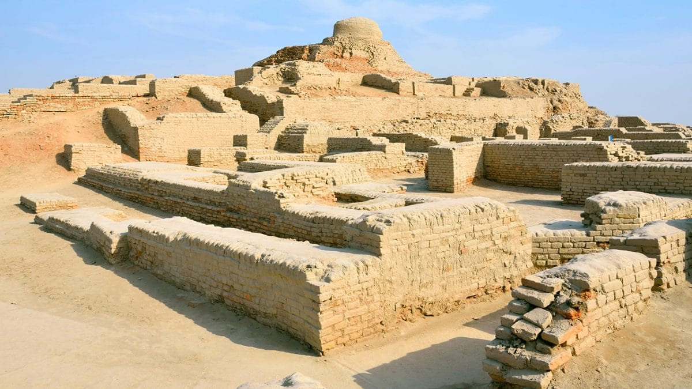

<div class="portfolio-single-load clearfix">
    <div class="custom-full-width-box">
        <div class="custom-container">
            <div class="custom-row align-items-center">
                <div class="custom-image-column">
                    
                </div>
                <div class="custom-text-column">
                    <h2 class="custom-heading">Indus Valley Civilization</h2>
                    <p class="custom-paragraph">
                        The Indus Valley Civilization, also known as the Harappan Civilization, was one of the world's earliest urban civilizations, flourishing in the fertile plains of present-day Pakistan and northwest India around 2500 BCE. Renowned for its advanced urban planning, sophisticated drainage systems, and impressive architecture, the civilization thrived for over a millennium before mysteriously declining around 1900 BCE.
<br><br>
Mohenjo-Daro and Harappa were the two largest urban centers of the Indus Valley Civilization, showcasing remarkable feats of engineering and urban organization. The civilization had highly developed culture, evidenced by its elaborate pottery, intricate seals, and distinctive script that is yet to be fully deciphered. Trade networks extended across the region and beyond, facilitating the exchange of goods such as precious metals, gemstones, and textiles.
<br><br>
Join our "Journey Through Time: Exploring the Ancient Indus Civilization" tour to delve into the rich history and archaeological marvels of southeastern Pakistan. Explore the remnants of this ancient civilization, tracing its footsteps along the banks of the mighty Indus River, and uncover the mysteries of a bygone era that continues to intrigue and fascinate us today.

                    </p>
                </div>
            </div>
        </div>
    </div><!-- .custom-full-width-box end -->

</div><!-- end single-project -->
